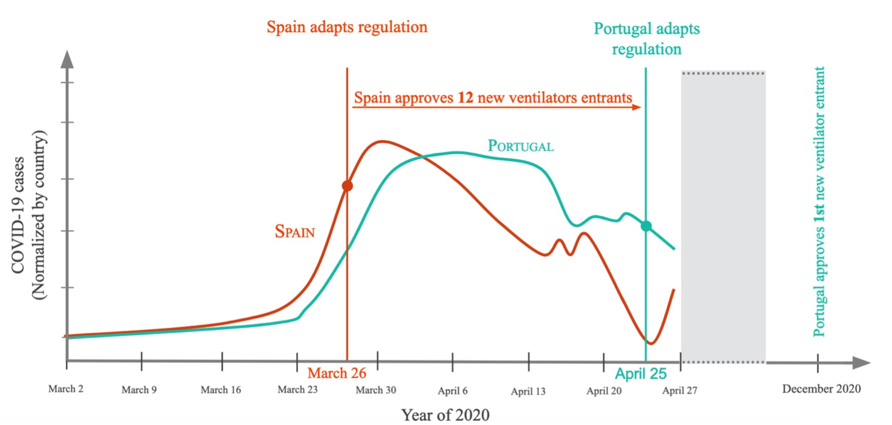

- Work published in world renowed academic journal: Research Policy
Policy perspective
Granular coordination: leveraging domestic industry in the age of global value chains (Book)
We develop a framework for how nations can strategically align all of the policy tools at their disposal to ensure access to critical supplies during crises, and make strategic investments in industrial bases during non -crises. (Co-authorship with Nikhil Kalathil)
National and Sub-National Policy for Domestic Manufacturing Flexibility:
A Policy Framework to Incentivize Flexibility Based on Lessons from the COVID-19 Medical Supply Response
In this work, we propose a policy framework to support economic dynamism and manufacturing flexibility that makes use of the full suite of local and regional as well as national policy mechanisms, from acting as central repositories of information and validation to contracts and procurements, through regulatory flexibility and street-level bureaucrats to appropriately incentivize both pre-crisis and during crises investments in flexibility among firms of all sizes, taking advantage of the specific strengths and weaknesses of firms of different sizes
Winner of University of Cambridge, Babbage innovation policy awards 2022 from Cambridge Industrial Innovation Policy (Prize: $10.000)
Industrial Policy Framework:
New pathways to tackle the obstacles firms must overcome to penetrate technologically advanced markets
From my field-work in the mechanical ventilator market, I develop an Industrial Policy framework for policy makers to leverage new pathways to tackle the challenges firms must overcome to penetrate new markets. Such framework consists of five dimensions of firms’ capabilities relevant to their innovation process of technologically advanced products high in tacit knowledge: Manufacturing capabilities, Regulatory expertise, Market-specific knowledge, Supply-chain insights, and Technological Capacity to innovate.
The Defense Production Act (DPA):
How does the United States reacts to supply shortages
In this work, I explore the way the United States still leverage an industrial policy created during second world war. The Defensive Production Act allows the US Government to dictate what its internal industry should produce by large scale contracts and incentives to maintain and develop strategic national and regional manufacturing capabilities.
Economic perspective
I have been helping to build capabilities within the European Commission to monitor the impact of Supply Chain disruptions.
Together with the Commission's Chief Economist Team, I have built an early warning mechanism to monitor supply chain disruptions.
Currently, we are working on extending such tool to assess possible supply chain disruptions in net-zero Green Technologies:
Photo Voltaics Solar Panels, Wind Turbines (onshore and Offshore), Electrical Vehicles Batteries, Heat Pumps, and Fuel Cells and Hydrogen electrolysers
Supply Chain Alert Notification (SCAN) monitoring system
In collaboration with the European Commission, I have contributed to the development indicator-based mechanism to monitor the evolution of supply chains in the European Union (EU) and identify potential distresses. Current events, such as COVID-19 or the Russian aggression against Ukraine, have highlighted the need for a better risk assessment of supply chains, particularly in strategic areas, with the ultimate goal of detecting disruptions as early as possible to avoid potential adverse effects on the economy and society.
The proposed monitoring system is entitled “SCAN” (Supply Chain Alert Notification) and its main goal is to identify significant inflationary pressures and/or shortages, resulting from imbalances between demand and supply. This data-driven system could alert policy makers on possible supply chain disruptions, which can occur for specific products and sectors.
The SCAN is first applied at the product level, where supply chain disruptions start to materialise. In order to be able to have targeted conclusions, we illustrate how this mechanism performs by focusing on a set of important commodities in two strategic settings – i.e. production of solar panels, commodities affected by the Russian invasion. The SCAN is then applied for the universe of sectors to capture signals of distress with more important aggregate consequences.
- Published in Chief Economist paper series DG Internal Market, Industry, Entrepreneurship, and SMEs, European Commission
Technology perspective
Technological diversity induced by new entrants:
a case study of a technologically advanced industry in European markets
In this study, I investigate the relationship between technological diversity and the existing number of firms within a technologically advanced industry. I use the several shocks in the mechanical ventilator market during COVID-19 pandemic (sharp rise in demand, supply chain constraints, regulatory change) that resulted in a massive increase in the new entrants’ pool to analyze the technological advances brought up by this exogenous increase in the number of firms. I show that the entrance of these new firms brought up new approaches to innovation further boosting technological progress.
National core competencies and dynamic capabilities in times of crisis:
Adaptive regulation of new entrants in advanced technology markets

-
The extent to which domestic industrial capabilities are essential in contributing to a Nations’ prosperity and national well being is the topic of long-standing debate. On the one hand, globalization and production outsourcing can lead to greater productivity, lower product costs, and gains from trade. On the other hand, national capabilities have long been a source of competitiveness and security during times of war and other crises.
-
We explore the importance of domestic industrial capabilities during crises through a comparative case study of two countries - Spain and Portugal - to the sudden spike in demand for the manufacture of mechanical ventilators brought on by the COVID-19 pandemic.
-
To unpack the processes used by each country we leverage insights from 60 semi-structured interviews across experts from industry, healthcare workers, regulators, non-profit organizations, and research centers. We find that Spanish regulatory measures were more effective, resulting in 12 times more approvals.
-
We find that Spanish regulatory measures were more effective, resulting in 12 times more approvals and we conclude by proposing new theory for how nations might identify important core competencies to enhance their dynamic (regulatory) capabilities in areas likely to be critical to their social welfare.
Cross institutional collaboration in times of crisis:
The symbiotic role of central and local institutions in addressing technologically advanced product shortages
-
Nations typically rely on international trade to satisfy a spike in internal demand that cannot be fulfilled by market incumbents. When international trade is inaccessible due to export blocks or other external events, nations have a portfolio of financial, institutional, and regulatory instruments to leverage their own domestic industry.
-
We explore the impact that different levels of centralization and decentralization of regulatory institutions have on how flexible Nations can be when creating conditions for new firms to enter underserved markets and for incumbent firms from those same markets to simplify their products (with an acceptable level of safety).
-
We find that centralized adaptations to the established regulations proved to be more effective in providing a level playing field for all European firms while decentralized (country-specific) market surveillance allowed each Member-state's competent authorities to adjust their policies to the respective internal context.